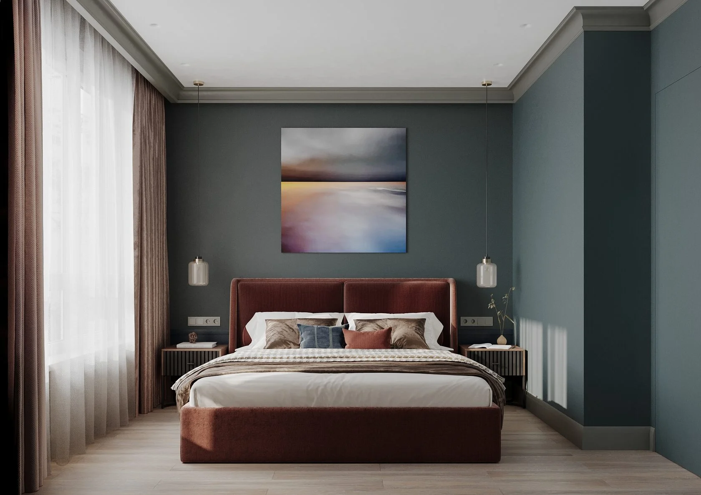

Дизайн-проект с визуализацией
Квартира на Канарских островах
Деревянная обеденная группа стоит у большого окна. Мягкий зелёный оттенок стены продолжает светлую природную палитру.
- Площадь
- 90 м²
Визуализация
Галерея проекта19 — 19 изображений



Следующий проектЖК «Западный порт»